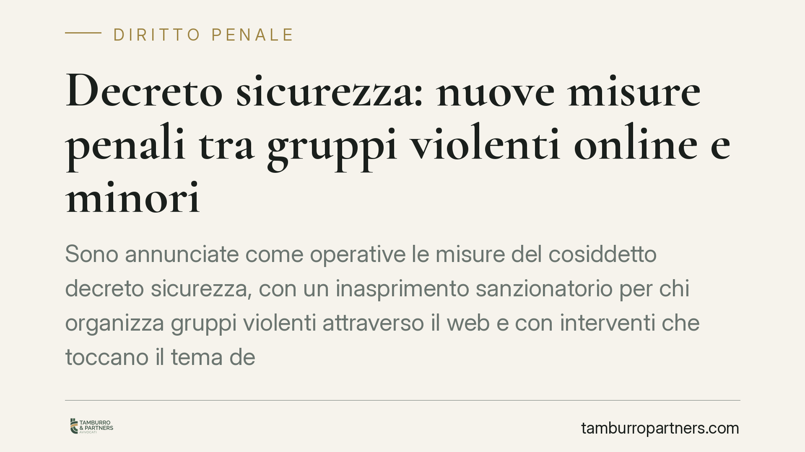

Decreto sicurezza: nuove misure penali tra gruppi violenti online e minori
Sono annunciate come operative le misure del cosiddetto decreto sicurezza, con un inasprimento sanzionatorio per chi organizza gruppi violenti attraverso il web e con interventi che toccano il tema dell'imputabilità dei minori tra 14 e 18 anni. Il quadro va però letto con cautela: gli estremi normativi vanno verificati sulla Gazzetta Ufficiale prima di considerare applicabili le singole previsioni.

Il contesto
Secondo quanto riportato dalla stampa economica, dal 24 ottobre 2026 entrerebbero in vigore le misure penali del nuovo pacchetto sicurezza. L'informazione circola con ampia eco mediatica, ma allo stato richiede una verifica puntuale.
Una premessa di metodo è doverosa. Per poter affermare che una norma penale è operativa occorre conoscerne gli estremi esatti: numero e anno del decreto-legge (o della legge di conversione) e, soprattutto, gli articoli del codice penale introdotti o modificati. Al momento della redazione di questo contributo tali dati non risultano ancora riscontrabili in una fonte ufficiale consultabile. Invitiamo pertanto a trattare come prevista e non come certa sia la data di entrata in vigore sia la portata delle singole misure, fino alla pubblicazione in Gazzetta Ufficiale.
Inquadramento normativo
Le anticipazioni descrivono due filoni di intervento.
Il primo riguarderebbe l'introduzione di una fattispecie dedicata a chi organizza o dirige gruppi violenti costituiti o operanti online, con una cornice edittale — cioè l'intervallo tra pena minima e massima fissato dal legislatore per quel reato — che arriverebbe fino a dodici anni di reclusione. Per valutarne l'impatto sarà decisivo leggere l'articolo che la introduce: solo il testo definitivo chiarirà il bene giuridico tutelato, la condotta tipica e le aggravanti.
Il secondo filone toccherebbe il tema dell'imputabilità dei minori. Qui serve chiarezza sul regime vigente, che resta il punto di riferimento finché non interviene una modifica pubblicata. L'art. 98 del codice penale stabilisce che il minore tra i 14 e i 18 anni è imputabile solo se, al momento del fatto, era capace di intendere e di volere; quando lo è, la pena è comunque diminuita. Il minore di 14 anni, invece, non è mai imputabile (art. 97 c.p.). Eventuali interventi sull'art. 98 c.p. andranno letti nel testo che li introduce: finché non sono pubblicati, il regime descritto rimane quello applicabile.
Implicazioni pratiche
Se confermata, la nuova fattispecie sui gruppi violenti online sposterebbe l'attenzione dalla singola condotta violenta all'attività organizzativa e direttiva. È una distinzione centrale.
Un conto è partecipare a un episodio di violenza; un altro è ideare, coordinare, reclutare o dirigere una struttura che quella violenza la programma e la rende possibile. Le due posizioni, sul piano della responsabilità e della risposta sanzionatoria, non sono equivalenti. Chi gestisce canali, chat o piattaforme attraverso cui si organizzano aggressioni potrebbe vedersi contestata una posizione di maggiore gravità rispetto al singolo esecutore.
Sul versante dei minori, nessun automatismo: l'accertamento della capacità di intendere e di volere resta un giudizio concreto, caso per caso, che richiede valutazione individuale e, di regola, supporto peritale.
Cosa fare in concreto
- Verificate la fonte normativa prima di assumere decisioni: individuate numero e anno del provvedimento e gli articoli del codice penale toccati, controllando la pubblicazione in Gazzetta Ufficiale.
- Distinguete i ruoli: chiarite, nella vostra posizione o in quella di un familiare coinvolto, se si tratti di partecipazione a un fatto o di attività organizzativa, perché le conseguenze differiscono.
- Conservate le evidenze digitali: messaggi, cronologie, inviti e amministrazioni di gruppi online possono risultare decisivi sia in accusa sia in difesa; non cancellateli.
- Per i minori, attivate subito un confronto tecnico: la valutazione della capacità di intendere e di volere incide sull'imputabilità e va impostata fin dalle prime fasi.
- Rivolgetevi a un difensore prima di rendere dichiarazioni spontanee o colloqui informali, soprattutto nei procedimenti che coinvolgono minori.
Una nota di prudenza
I confini applicativi delle nuove fattispecie, se e quando entreranno in vigore, si definiranno nel tempo attraverso la giurisprudenza. La formula "gruppi violenti operanti online" è ampia e sarà l'interpretazione dei giudici a tracciarne i contorni concreti. Fino ad allora, ogni valutazione va condotta sul testo pubblicato e sul caso specifico, evitando letture generalizzanti.
Continueremo a monitorare l'iter del provvedimento e ad aggiornare questo contributo non appena saranno disponibili gli estremi ufficiali.
---
Contributo informativo a cura di Tamburro & Partners - Avv. Giuseppe Tamburro. Non costituisce parere legale.
Ogni condominio ha una storia a sé.
Se gestisci un'amministrazione e vuoi un confronto su una specifica questione condominiale, scrivi allo studio. Ti rispondiamo entro un giorno lavorativo.